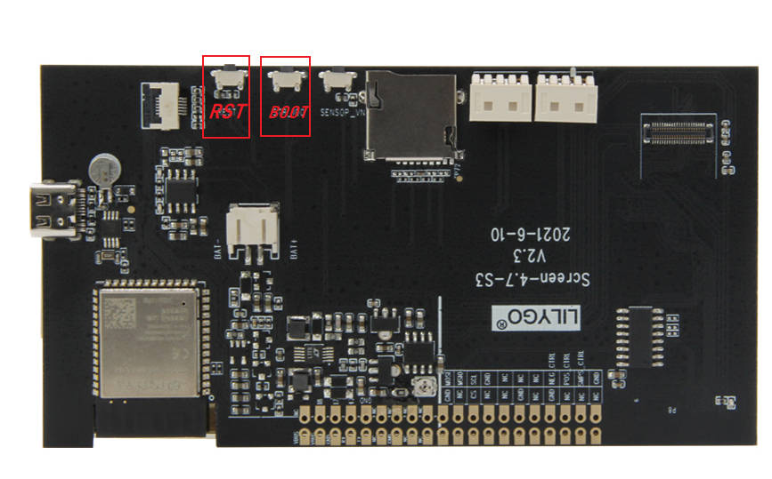

English
EnglishLILYGO T5 E-Paper

Version Iteration:
| Version | Update date | Update description |
|---|---|---|
| T5-ePaper-S3-V2.4 | Current Version |
Purchase Links
| Product | SOC | FLASH | PSRAM | Link |
|---|---|---|---|---|
| T5-4.7-S3 | ESP32-S3-WROOM-1-N16R8 | 16MB | 8MB | LILYGO Mall |
Table of Contents
- Description
- Preview
- Modules
- Quick Start
- Pin Overview
- Related Tests
- FAQ
- Projects
- Resources
- Dependent Libraries
Description
The LILYGO T5-4.7-S3 capacitive touch display development board is a 4.7-inch E-Ink display (E-Paper) solution based on the ESP32-S3-WROOM-1-N16R8 chip (with built-in 8MB PSRAM and 16MB Flash). This product integrates capacitive touch functionality (supporting two-point touch), is equipped with a PCF8563 real-time clock chip, features a Type-C USB interface and a Li-Po battery interface (JST-PH 2.0mm), supports battery voltage monitoring (Bat ADC), provides GPIO expansion interfaces compatible with Raspberry Pi 40-PIN, includes an onboard TF card slot, has dedicated display drive signals (STV/LE) and SPI interface (CS/SCLK/MOSI/MISO), and adopts a 2.5D curved surface design. It is specifically designed for developing low-power E-Ink display applications with touch interaction (such as information displays, smart home display terminals, portable devices, etc.).
Preview
Physical Image

Pinout Diagram

Modules
MCU
- Chip: ESP32-S3-WROOM-1-N16R8
- PSRAM: 8MB
- FLASH: 16MB
- Wireless: Wi-Fi 802.11 b/g/n; Bluetooth 5.0 (BLE)
- Other Notes: For more information, please visit Espressif Official ESP32-S3 Datasheet
E-Ink Display
- Model: EDO47TC1
- Size: 4.7-inch
- Resolution: 540×960 pixels
- Type: Low-power E-Ink display
- Interface: SPI + dedicated drive signals (STV/LE)
Touchscreen
- Chip: GT911
- Type: Capacitive Touchscreen
- Support: Two-point touch
- Interface: I²C
Real-Time Clock
- Chip: PCF8563
- Function: Real-Time Clock, time keeping
- Interface: I²C
Power Management
- Battery Interface: JST-PH 2.0mm Li-Po battery interface
- Voltage Monitoring: Battery voltage ADC monitoring
- USB Power Supply: Type-C interface
Overview
| Component | Description |
|---|---|
| MCU | ESP32-S3-WROOM-1-N16R8 |
| FLASH | 16MB |
| PSRAM | 8MB |
| Display | EDO47TC1 4.7-inch E-Ink Display (540×960) |
| Touch | GT911 Capacitive Touchscreen (Two-point touch) |
| Clock | PCF8563 Real-Time Clock |
| Storage | TF Card Expansion |
| Wireless | 2.4 GHz Wi-Fi & Bluetooth 5 (LE) |
| USB | 1 × USB Port and OTG (TYPE-C Connector) |
| IO Expansion | 2 × 20pin Expansion Interfaces (Raspberry Pi 40-PIN compatible) |
| Expansion Interfaces | 1 × JST-PH 2.0mm Battery Interface + 2 × 4pin Molex Connectors |
| Buttons | 1 x RST Button + 1 x SIR_io0 Button + 1 x io21 Button |
| Mounting Holes | 6 × 3.8mm Mounting Holes |
| Dimensions | 121×67×12mm |
| Design | 2.5D Curved Surface Design |
Quick Start
Example Support
examples/
├── button ; Keystroke example
├── demo ; Comprehensive test example including sleep current test
├── drawExample ; Simple examples of drawing lines and circles
├── drawImages ; Show image example
├── grayscale_test ; Grayscale example
├── screen_repair ; Full screen refresh example
├── spi_driver ; Display as slave device
├── touch ; Touch example
└── wifi_sync ; WiFi Comprehensive Example
PlatformIO
- Install Visual Studio Code and Python
- Search for the
PlatformIOplugin in theVisualStudioCodeextension and install it. - After the installation is complete, you need to restart
VisualStudioCode - After restarting
VisualStudioCode, selectFilein the upper left corner ofVisualStudioCode->Open Folder-> select theLilyGo-EPD47directory - Wait for the installation of third-party dependent libraries to complete
- Click on the
platformio.inifile, and in theplatformiocolumn - Uncomment one of the lines
src_dir = xxxxto make sure only one line works - Click the (✔) symbol in the lower left corner to compile
- Connect the board to the computer USB
- Click (→) to upload firmware
- Click (plug symbol) to monitor serial output
- If it cannot be written, or the USB device keeps flashing, please check the FAQ below
Arduino
Install Arduino IDE
Install Arduino ESP32 V 2.0.5 or above and below V3.0 ，recommended to use version 2.0.15, the URL is as follows
Steps: Arduino IDE -> Preferences -> Additional boards manager URLshttps://espressif.github.io/arduino-esp32/package_esp32_index.jsonSketch->Include Library->Manage LibrariesLibrary Search->LilyGo EPD47->Install->Install ALLFile->Examples->LilyGo EPD47->Any ExamplesTools, Look at the picture to choose
| Arduino IDE Setting | Value |
| ------------------------------------ | --------------------------------- |
| Board | ESP32S3 Dev Module |
| Port | Your port |
| USB CDC On Boot | Enable |
| CPU Frequency | 240MHZ(WiFi) |
| Core Debug Level | None |
| USB DFU On Boot | Disable |
| Erase All Flash Before Sketch Upload | Disable |
| Events Run On | Core1 |
| Flash Mode | QIO 80MHZ |
| Flash Size | 16MB(128Mb) |
| Arduino Runs On | Core1 |
| USB Firmware MSC On Boot | Disable |
| Partition Scheme | 16M Flash(3M APP/9.9MB FATFS) |
| PSRAM | OPI PSRAM |
| Upload Mode | UART0/Hardware CDC |
| Upload Speed | 921600 |
| USB Mode | CDC and JTAG |- The options in bold are required, others are selected according to actual conditions.
Select
PortClick
upload, Wait for compilation and writing to completeIf it cannot be written, or the USB device keeps flashing, please check the FAQ below
Development Platforms
Pin Overview
| ESP32S3 GPIO | Connect To | Free |
|---|---|---|
| 13 | 74HCT4094D CFG_DATA | ❌ |
| 12 | 74HCT4094D CFG_CLK | ❌ |
| 0 | 74HCT4094D CFG_STR | ❌ |
| 38 | E-paper CKV | ❌ |
| 40 | E-paper STH | ❌ |
| 41 | E-paper CKH | ❌ |
| 8 | E-paper D0 | ❌ |
| 1 | E-paper D1 | ❌ |
| 2 | E-paper D2 | ❌ |
| 3 | E-paper D3 | ❌ |
| 4 | E-paper D4 | ❌ |
| 5 | E-paper D5 | ❌ |
| 6 | E-paper D6 | ❌ |
| 7 | E-paper D7 | ❌ |
| 21 | Button | ❌ |
| 14 | Battery ADC | ❌ |
| 16 | SD MISO | ❌* |
| 15 | SD MOSI | ❌* |
| 11 | SD SCK | ❌* |
| 42 | SD CS | ❌* |
| 18 | SDA | ❌ |
| 17 | SCL | ❌ |
| 47 | TouchPanel IRQ | ❌ |
| 45 | No Connect any | ✅ |
| 10 | No Connect any | ✅ |
| 48 | No Connect any | ✅ |
| 39 | No Connect any | ✅ |
- The GPIOs marked with ✅ are free to use. GPIO10 Can be used for analog input, but not for others.
- SD Pin If you don't use an SD card, these GPIOs(16,15,11,42) are free to use.
- ESP cannot be woken up by touch interrupt because RTC_GPIO is not connected to touch interrupt in design. However, GPIO10 can be connected to GPIO47 to make touch wake-up function possible. Please see here issues/93
Related Tests
FAQ
Which one does the sleep current measurement example use? ?
Sleep current test measured by demo example
How to fix afterimages?
Please upload examples/screen_repair to try to remove afterimages.
It is not 100% able to remove afterimages.The board uses USB as the JTAG upload port. When printing serial port information on USB_CDC_ON_BOOT configuration needs to be turned on.
If the port cannot be found when uploading the program or the USB has been used for other functions, the port does not appear.
Please enter the upload mode manually.

- Connect the board via the USB cable
- Press and hold the BOOT(IO0) button , While still pressing the BOOT(IO0) button, press RST
- Release the RST
- Release the BOOT(IO0) button
- Upload sketch